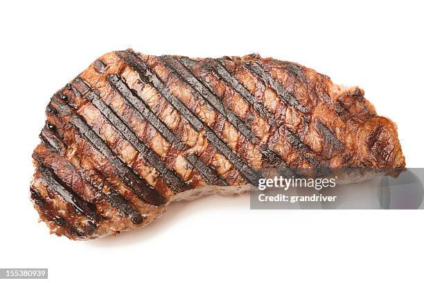

Steak
Prep Time:
8 Minutes
Yield:
5 Minutes
INGREDIANTS
150 grams ribeye steak
1 tablespoon salt
1 tablespoon crushed pepper
3/4 cups butter
STEPS
Let the steak come to room temprature for atleast 5 minutes.
Season the steak on both sides with salt and butter, heat the skillet or grill to 145 F/63 C.
Sear the steak with melted butter, each side should be seared for 3 to 4 minutes.
BUY NOW